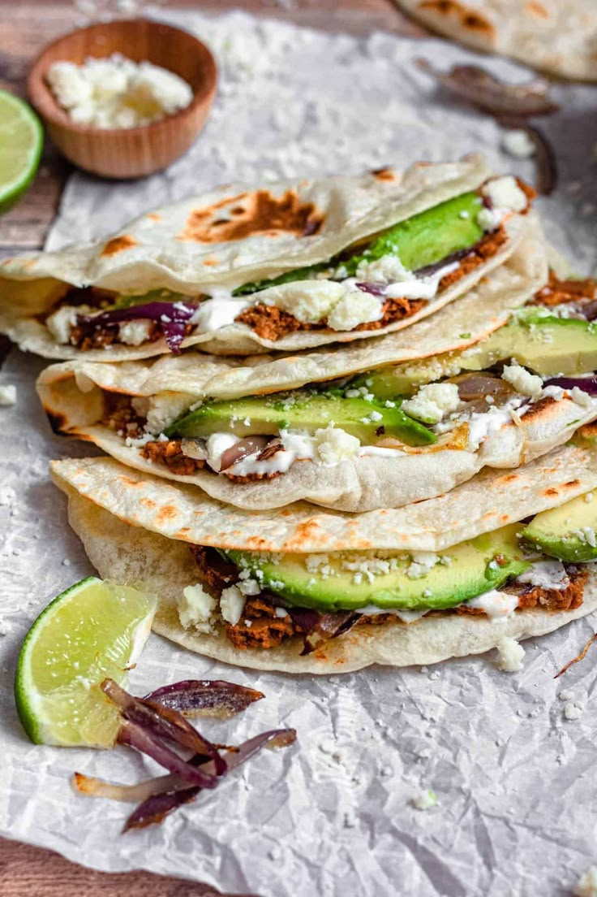
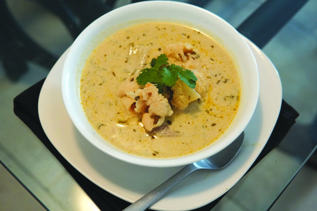
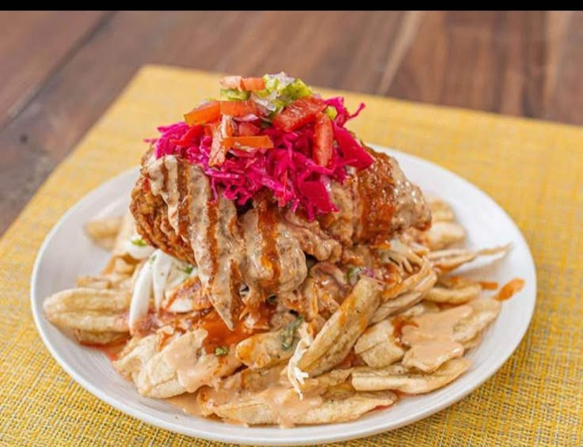
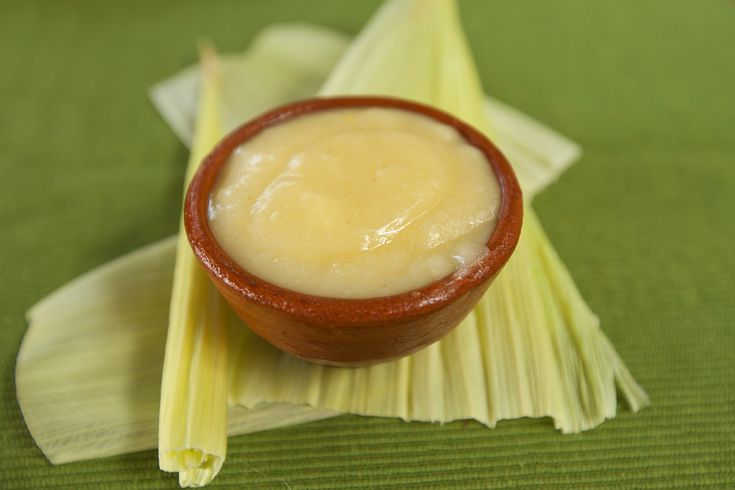
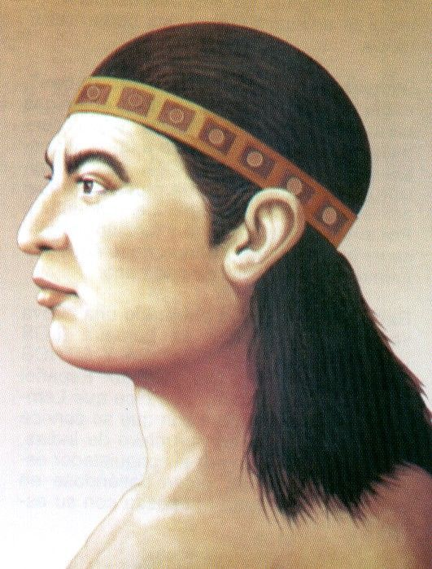
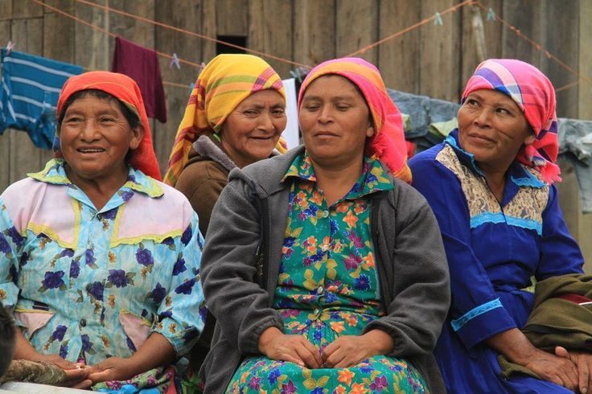
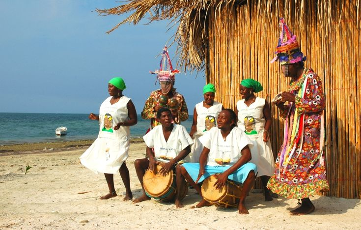
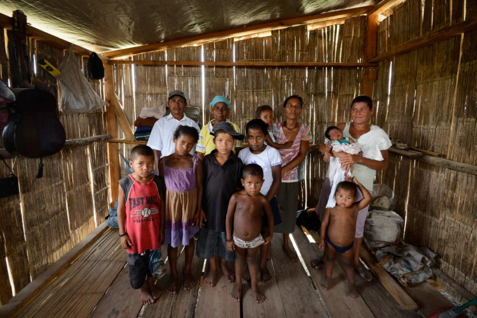
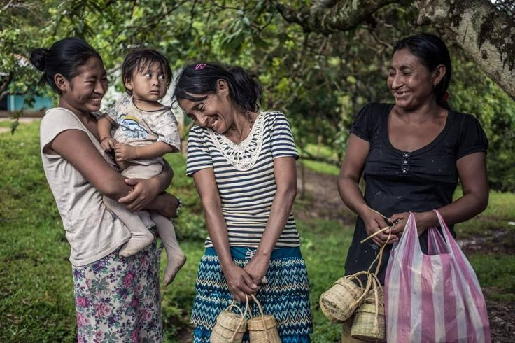
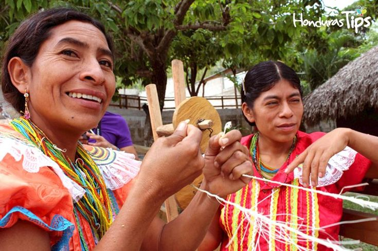

Cultura, Patrimonio y Gastronomía
Conoce la historia, las tradiciones y los sabores que forman parte de la identidad de Honduras.
Sabores de Honduras
La gastronomía hondureña reúne ingredientes y recetas tradicionales que se disfrutan en distintas regiones del país.

Baleadas tradicionales
Tortillas de harina rellenas de frijoles, mantequilla y queso, con otros ingredientes al gusto.

Sopa de caracol
Platillo tradicional preparado con caracol, leche de coco y otros ingredientes.

Pollo con tajadas
Platillo popular en ferias, celebraciones y puestos callejeros, apreciado por su combinación de crujiente, fresco y cremoso

Tikin xik
Preparación de pescado tradicional de la cocina maya de la península de Yucatán, incluida como referencia de la diversidad gastronómica regional.

Atol de elote
Bebida tradicional elaborada principalmente con maíz, apreciada por su sabor dulce.
Café de altura
Honduras produce café en zonas montañosas, reconocido por sus aromas y diferentes perfiles de sabor.
Historia y próceres de Honduras
Honduras también recuerda a sus próceres patrios, quienes contribuyeron a la historia y a la construcción de nuestra identidad nacional. Conocer sus aportes nos ayuda a valorar nuestra historia y nuestros símbolos patrios.

Francisco Morazán
Francisco Morazán se destacó por luchar por la unión de Centroamérica y fue presidente de la República Federal de Centroamérica. Es recordado como una figura importante de la historia hondureña.

Lempira
Lempira fue un líder indígena que luchó contra la conquista española en el territorio de Honduras durante el siglo XVI. En su honor, la moneda nacional de Honduras lleva su nombre.

Jose Cecilio del Valle
José Cecilio del Valle participó en los acontecimientos relacionados con la independencia de Centroamérica y es recordado por sus aportes al pensamiento político y la educación.
Etnias vivas de Honduras
Honduras cuenta con diversos pueblos que conservan sus propias tradiciones, lenguas y formas de vida. Su cultura es una parte importante del patrimonio nacional.

Lencas
Conservan tradiciones artesanales, agrícolas y culturales que forman parte de la historia hondureña.

Garífunas
Destacan por su música, sus danzas, su lengua y su gastronomía, especialmente en las comunidades costeras.

Misquitos
Mantienen sus tradiciones y conocimientos relacionados con los ríos, el mar y la naturaleza.

Tolupanes
Son un pueblo indígena que conserva conocimientos, costumbres y una identidad cultural propia.

Chortís
Conservan tradiciones vinculadas con la herencia maya y las comunidades del occidente de Honduras.